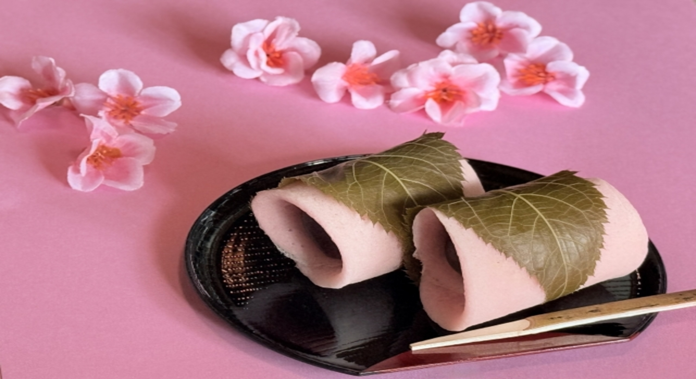

材料
- 小麦粉 200g
- 白玉粉 100g
- お好みのあんこ 300g
- 桜の葉の塩漬け 6枚
- 砂糖 大さじ1
- 食紅（赤） 1滴
- 水 300ml
- サラダ油 小さじ1
作り方
- 準備 桜の葉の塩漬けは２時間ほど水に浸して塩抜きし、キッチンペーパーで水分をしっかり拭き取っておきます。
お好みのあんこを６等分にしておきます。 - ボウルに白玉粉を加え、水を少量ずつ数回に分けて加え、泡立て器で混ぜ合わせる
- 混ざったら砂糖を加え混ぜ合わせる、さらに小麦粉を振るいながら加え、混ぜ合わせる
- 全体が混ざったら、食紅を爪楊枝の先端に付けて加え、混ぜ合わせる
- 弱火で熱したフライパンにサラダ油をひき、キッチンペーパーで薄く伸ばす
- 大さじ２程度の量の３を流し、楕円形にして弱火で焼く
- 表面が乾いたら、取り出して冷まします
- 焼いた面を外側にして、お好みのあんこを手前にのせて巻きます
- 桜の葉の塩漬けで包んで完成！